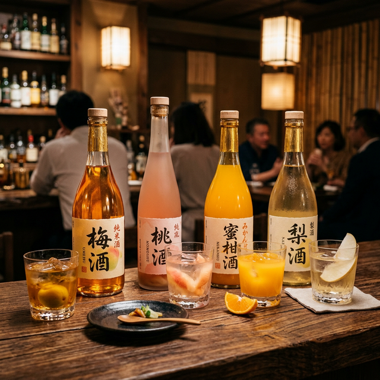

「スーパーの梅酒も美味しいけれど、たまには自分へのご褒美に、とっておきの濃厚な一本が飲みたい。」
そんな方にぜひ知ってほしいのが、全国の蔵元がこだわり抜いて造る「プレミアム梅酒」と「厳選果実酒」の世界です。完熟した果実の旨みをそのまま閉じ込めたようなトロトロの口当たりや、上品な和三盆の甘み、さらにはウイスキー樽で熟成させた深いコク。これらは一度飲むと戻れないほどの感動をくれます。
今回は、お酒のプロが実際に飲んで感動した「お取り寄せで絶対外さない、濃厚果実酒ランキング」を一挙公開します。デザートがわりにもなる至福の一杯を、あなたのお手元に！
📜 この記事の目次
第1位：平和酒造「鶴梅 完熟」｜和歌山
平和酒造 鶴梅〜完熟〜
梅酒 梅の本場・和歌山が誇る、まさに「究極の完熟梅酒」です。樹上で完熟し、自然に落下する直前の極上の梅だけを使用。その香りは「これが梅？」と疑うほど桃に近く、一口飲めば、とろけるような甘美な味わいが広がります。
酸味とのバランスが絶妙で、濃厚なのに後味は驚くほど爽やか。ソーダ割りで華やかに楽しむのも良し、バニラアイスにかけて大人のデザートにするのも最高に贅沢な楽しみ方です。
![[商品価格に関しましては、リンクが作成された時点と現時点で情報が変更されている場合がございます。]](https://hbb.afl.rakuten.co.jp/hgb/51f00de0.18ed9d2d.51f00de1.beef3c3f/?me_id=1211534&item_id=10000550&pc=https%3A%2F%2Fthumbnail.image.rakuten.co.jp%2F%400_mall%2Fumeshu%2Fcabinet%2Fitem01%2F1001-01s_01.jpg%3F_ex%3D240x240&s=240x240&t=picttext "[商品価格に関しましては、リンクが作成された時点と現時点で情報が変更されている場合がございます。]")

第2位：梅乃宿「あらごし梅酒」｜奈良
梅乃宿酒造 あらごし梅酒
梅酒 圧倒的な支持を得ている「あらごしシリーズ」の顔。吉野梅の果肉を贅沢にブレンドした「にごり梅酒」です。グラスに注ぐと、その粘度の高さに驚かされます。口に含めば、果肉の粒感が心地よく、まるで完熟フルーツを丸かじりしているような贅沢さに包まれます。
アルコール度数は控えめで、お酒が弱い方にもおすすめ。まずはロックで、その「濃さ」をダイレクトに味わってください。ヨーグルトドリンクと割ってカクテル風にするのも隠れた人気レシピです。
![[商品価格に関しましては、リンクが作成された時点と現時点で情報が変更されている場合がございます。]](https://hbb.afl.rakuten.co.jp/hgb/51f00de0.18ed9d2d.51f00de1.beef3c3f/?me_id=1211534&item_id=10001150&pc=https%3A%2F%2Fthumbnail.image.rakuten.co.jp%2F%400_mall%2Fumeshu%2Fcabinet%2Fitem01%2F1006-01s_01.jpg%3F_ex%3D240x240&s=240x240&t=picttext "[商品価格に関しましては、リンクが作成された時点と現時点で情報が変更されている場合がございます。]")
第3位：八木酒造「月ヶ瀬の梅原酒」｜奈良
八木酒造 月ヶ瀬の梅原酒
梅酒 多くのリピーターを抱える、大人のための梅酒です。アルコール度数は20%と高めですが、その分「梅の酸味、旨みが一切薄まっていない」のが特徴。甘すぎず、キリッとした強さがあるため、脂の乗った料理とも驚くほど合います。
おすすめは、大きめの氷を入れたロック。氷が少しずつ溶けていく過程で変わる香りのグラデーションを楽しんでください。ラベルの美しさも相まって、お酒好きな方へのギフトとしても非常に喜ばれます。
![[商品価格に関しましては、リンクが作成された時点と現時点で情報が変更されている場合がございます。]](https://hbb.afl.rakuten.co.jp/hgb/51f01012.7533ae7b.51f01013.8bcfcdf5/?me_id=1294106&item_id=10001795&pc=https%3A%2F%2Fthumbnail.image.rakuten.co.jp%2F%400_mall%2Fsakayainoue%2Fcabinet%2F03279578%2Fimgrc0063909258.jpg%3F_ex%3D240x240&s=240x240&t=picttext "[商品価格に関しましては、リンクが作成された時点と現時点で情報が変更されている場合がございます。]")
第4位：梅乃宿「あらごしもも」｜奈良
梅乃宿酒造 あらごしもも
ピーチ 日本酒ベースのリキュールながら、その味わいは完全に「完熟桃のピューレ」です。和歌山や山梨産の桃を贅沢に使い、皮を剥いてから丁寧にすり潰してブレンド。一口飲めば、桃の芳醇な香りと、とろりとした濃厚な質感が口いっぱいに広がります。
ロックはもちろん、牛乳で割って「大人のピーチミルク」にするのも最高。お酒ということを忘れてしまうほどの美味しさで、特に女性へのプレゼントとして外したことがありません。
![[商品価格に関しましては、リンクが作成された時点と現時点で情報が変更されている場合がございます。]](https://hbb.afl.rakuten.co.jp/hgb/51f010fb.5296e94b.51f010fc.e586b8c9/?me_id=1234735&item_id=10000152&pc=https%3A%2F%2Fthumbnail.image.rakuten.co.jp%2F%400_mall%2Ffujiwaraya-01%2Fcabinet%2F00820809%2Fimgrc0108467648.jpg%3F_ex%3D240x240&s=240x240&t=picttext "[商品価格に関しましては、リンクが作成された時点と現時点で情報が変更されている場合がございます。]")
第5位：子宝リキュール「山形ラ・フランス」｜山形
楯の川酒造 子宝リキュール 山形のラフランス
洋梨 山形県産の最高級ラ・フランスを贅沢に使用したリキュール。日本酒「楯野川」の純米大吟醸をベースにしているため、果実の旨みを邪魔せず、むしろ引き立てる上品な仕上がりになっています。「まるで果実をそのまま飲んでいるよう」と言わしめるほどの濃厚さが魅力です。
冷蔵庫でキンキンに冷やしてストレートで。またはソーダで割って、弾ける泡とともに立ち上がる高貴な香りを楽しんでください。週末の自分への最高のご褒美になるはずです。
![[商品価格に関しましては、リンクが作成された時点と現時点で情報が変更されている場合がございます。]](https://hbb.afl.rakuten.co.jp/hgb/51f01225.5096af43.51f01226.c33677c6/?me_id=1211583&item_id=10000722&pc=https%3A%2F%2Fthumbnail.image.rakuten.co.jp%2F%400_mall%2Fyamagatamaru%2Fcabinet%2F00870388%2Fimg55781239.jpg%3F_ex%3D240x240&s=240x240&t=picttext "[商品価格に関しましては、リンクが作成された時点と現時点で情報が変更されている場合がございます。]")
第6位：濱田酒造「赤兎馬 柚子梅酒」｜鹿児島
濱田酒造 薩州 赤兎馬 柚子梅酒
柚子梅酒 プレミアム芋焼酎「赤兎馬」を使用して造られた、非常に珍しい柚子梅酒。「柚子の鮮烈な香りと、梅のふくよかな甘み」が、赤兎馬ならではのキレ味の鋭いアルコール感と見事に調和しています。甘すぎず、かつ濃厚。食事の邪魔をしない大人のための果実酒です。
おすすめはソーダ割り。強炭酸で割ることで、柚子のオイル分が弾け、より一層香りが引き立ちます。焼き鳥や唐揚げなど、少し脂のあるおつまみとの相性はNo.1です。
![[商品価格に関しましては、リンクが作成された時点と現時点で情報が変更されている場合がございます。]](https://hbb.afl.rakuten.co.jp/hgb/51f01343.80587ec2.51f01344.90c1d35c/?me_id=1279081&item_id=10005094&pc=https%3A%2F%2Fthumbnail.image.rakuten.co.jp%2F%400_mall%2Fmanroku%2Fcabinet%2Fimg092%2F9-hamad-16_1.jpg%3F_ex%3D240x240&s=240x240&t=picttext "[商品価格に関しましては、リンクが作成された時点と現時点で情報が変更されている場合がございます。]")
第7位：CHOYA「The CHOYA BLACK」
チョーヤ梅酒 The CHOYA BLACK
梅酒 梅酒の代名詞「チョーヤ」が本気で造り上げた、スタンダードにして至高の一本。1年以上熟成させた梅原酒に、フランス産ブランデーを贅沢にブレンド。「梅の酸味とブランデーの芳醇な香り」が絶妙に溶け合い、どこか懐かしくも新しい、深みのある味わいを楽しめます。
1,000円台という圧倒的なコストパフォーマンスも魅力。毎日の晩酌を少し贅沢に、でも気軽に楽しむならこれ以上の選択肢はありません。ダークチョコレートなどと一緒に味わうのもおすすめです。
![[商品価格に関しましては、リンクが作成された時点と現時点で情報が変更されている場合がございます。]](https://hbb.afl.rakuten.co.jp/hgb/51f0140a.a0313c60.51f0140b.965c9c6a/?me_id=1345661&item_id=10051317&pc=https%3A%2F%2Fthumbnail.image.rakuten.co.jp%2F%400_mall%2Fyo-sake%2Fcabinet%2F01%2F23%2F7177x01.jpg%3F_ex%3D240x240&s=240x240&t=picttext "[商品価格に関しましては、リンクが作成された時点と現時点で情報が変更されている場合がございます。]")
第8位：サントリー「山崎蒸溜所貯蔵 焙煎樽仕込梅酒」
サントリー 山崎蒸溜所貯蔵 焙煎樽熟成梅酒
梅酒 山崎蒸溜所でウイスキーを貯蔵した後の「古い樽」を使用して熟成させた非常に贅沢な梅酒です。樽を焙煎することで生まれるバニラのような甘い香りと、「ウイスキー由来のほろ苦く深い余韻」。梅酒でありながら、一流のウイスキーにも通ずるような威厳と洗練があります。
おすすめは「オン・ザ・ロック」。少しずつ氷を溶かしながら、ゆっくりと時間をかけて味わいたい一本です。お世話になった方への特別なギフトとしても、これ以上ない選択です。
![[商品価格に関しましては、リンクが作成された時点と現時点で情報が変更されている場合がございます。]](https://hbb.afl.rakuten.co.jp/hgb/51f014b4.6bf1d445.51f014b5.1d286981/?me_id=1344101&item_id=10001973&pc=https%3A%2F%2Fthumbnail.image.rakuten.co.jp%2F%400_mall%2Fgingin%2Fcabinet%2F701851_new.jpg%3F_ex%3D240x240&s=240x240&t=picttext "[商品価格に関しましては、リンクが作成された時点と現時点で情報が変更されている場合がございます。]")
第9位：子宝リキュール「りんご」｜山形
楯の川酒造 子宝リキュール 山形りんご
りんご 果実王国・山形県の新鮮なりんごをこれでもかと詰め込んだリキュール。「すりおろしりんごを食べているかのようなジューシーさ」があり、りんご本来の甘酸っぱさが元気をくれます。日本酒ベースでありながら、アルコール感は非常に穏やか。お子様のいるご家庭の「大人のご褒美時間」にぴったりです。
おすすめはソーダ割り。アップルタイザーのような感覚で、どんなシーンでも明るく彩ってくれます。ホットで飲むと、アップルパイのような温かい香りを楽しめるのも冬の醍醐味です。
![[商品価格に関しましては、リンクが作成された時点と現時点で情報が変更されている場合がございます。]](https://hbb.afl.rakuten.co.jp/hgb/51f01225.5096af43.51f01226.c33677c6/?me_id=1211583&item_id=10000699&pc=https%3A%2F%2Fthumbnail.image.rakuten.co.jp%2F%400_mall%2Fyamagatamaru%2Fcabinet%2F00870388%2Fimg55764188.jpg%3F_ex%3D240x240&s=240x240&t=picttext "[商品価格に関しましては、リンクが作成された時点と現時点で情報が変更されている場合がございます。]")
第10位：梅乃宿「あらごしみかん」｜奈良
梅乃宿酒造 あらごしみかん
みかん 最後に紹介するのは、あらごしシリーズの中でも絶大な中毒性を誇る「あらごしみかん」。みかんの果肉一粒一粒がそのまま入っており、「飲むというより食べる」感覚に近いフレッシュさ。外皮の苦みはなく、太陽をたっぷり浴びたみかんの甘みがストレートに届きます。
おすすめはデザートとして。「これがリキュール？」と疑うほどのフルーティーさは、お酒に馴染みのない方でも虜になること間違いなし。パーティーシーンでも必ず喜ばれる、華やかな一本です。
![[商品価格に関しましては、リンクが作成された時点と現時点で情報が変更されている場合がございます。]](https://hbb.afl.rakuten.co.jp/hgb/51f01688.e6fb3731.51f01689.81f9108c/?me_id=1274164&item_id=10018145&pc=https%3A%2F%2Fthumbnail.image.rakuten.co.jp%2F%400_mall%2Fehimekatayama%2Fcabinet%2F02748640%2Faramikan.jpg%3F_ex%3D240x240&s=240x240&t=picttext "[商品価格に関しましては、リンクが作成された時点と現時点で情報が変更されている場合がございます。]")
まとめ：最高のデザート時間を。
いかがでしたでしょうか。一口に梅酒・果実酒と言っても、その個性は驚くほど多様です。完熟梅のフルーティーな香り、あらごし果肉の贅沢な食感、そしてウイスキー樽やブランデー由来の深いコクなど、お取り寄せならではの特別な一杯が、あなたの夜をより豊かにしてくれるはずです。
- 初めてのプレミアム梅酒なら： 平和酒造「鶴梅 完熟」
- 果肉感をとことん楽しむなら： 梅乃宿「あらごしシリーズ」
- お酒好きの方へのギフトなら： サントリー「山崎蒸溜所貯蔵 梅酒」
- とにかくリフレッシュしたいなら： 赤兎馬「柚子梅酒」
これらの銘柄は、炭酸で割ってもよし、ロックでゆっくり味わうもよし。その日の気分に合わせて、あなただけのお気に入りの飲み方を見つけてみてください。最高の一杯とともに、贅沢なリラックスタイムをお過ごしください！